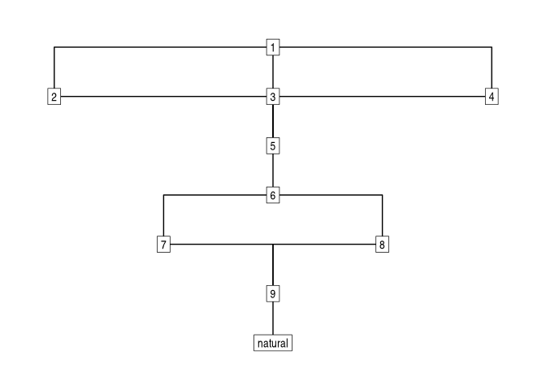

stratigraphr is a tidy framework for working with archaeological stratigraphy and chronology in R. It includes tools for reading, analysing, and visualising stratigraphic sequences (Harris matrices) and as directed graphs and an R interface to OxCal’s Chronological Query Language (CQL).
Installation
You can install the latest release of era from CRAN with:
install.packages("stratigraphr")Or install the development version from GitHub with pak:
# install.packages("pak")
devtools::install_github("joeroe/stratigraphr")Usage
stratigraph() uses a data frame of stratigraphic relations to construct a stratigraphic graph:
library(stratigraphr)
# Example stratigraphy from Harris (1979), figure 12:
harris12
#> context above below equal
#> 1 1 NA 2, 3, 4 <NA>
#> 2 2 1 5 <NA>
#> 3 3 1 5 <NA>
#> 4 4 1 5 <NA>
#> 5 5 2, 3, 4 6 <NA>
#> 6 6 5 7, 8 <NA>
#> 7 7 6 9 8
#> 8 8 6 9 7
#> 9 9 7, 8 natural <NA>
#> 10 natural 9 NA <NA>
stratigraph(harris12, "context", "above")
#> # A stratigraph: 10 units and 12 relations
#> # ✔ Valid stratigraphic graph
#> 1
#> ┌───────────────┼───────────────┐
#> 2 3 4
#> └───────────────┼───────────────┘
#> 5
#> │
#> 6
#> ┌───────┴───────┐
#> 7 8
#> └───────┬───────┘
#> 9
#> │
#> naturalstratigraph objects are built on top of tidygraph, which gives access to a powerful tidy interface for manipulating and analysing the stratigraphy. It also works seamlessly with ggraph. For example, to approximate a conventional ‘Harris matrix’ visualisation with ggraph:
library("ggraph")
#> Loading required package: ggplot2
# Example data after Harris 1979, Fig. 12
harris12 |>
stratigraph("context", "above") |>
ggraph(layout = "sugiyama") +
geom_edge_elbow() +
geom_node_label(aes(label = context), label.r = unit(0, "mm")) +
theme_graph()
For further information on:
-
Graph-bases stratigraphic analysis, see
vignette("stratigraphr"). -
Chronological query language, see
vignette("cql").
This package previous contained functions for tidy radiocarbon data. These were deprecated in v0.3.0 and moved to the c14 package. See c14’s introductory vignette for further information.